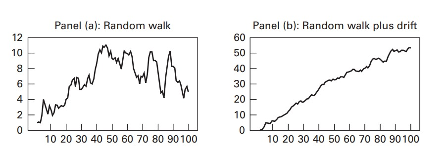

Series de Tiempo No Estacionarias (Univariadas)
Tendencias
Podemos decir que existen 2 tipos de tendencias, las tendencias deterministicas y estocasticas, estas se pueden representar de la forma:
\[ y_t = \text{tendencia} + \text{componente estacionario} + \text{error} \\ y_t = a_0 + \delta t + \varepsilon_t \]
Una tendencia deterministica es una función no aleatoria del tiempo, mientras que una tendencia estocastica es aleatoria y varia en el tiempo, las tendencias pueden detectarse mediante:
Metodos informales: Grafico de la serie y función de autocorrelación muestral
Metodos formales: Prueba de raíces unitarias Dickey-Fuller
Un ejemplo de una tendencia estocastica es una caminata aleatoria
Procesos altamente persistentes
Sea un proceso estocastico \(y_t\) que sigue una caminata aleatoria si:
\[ y_t = y_{t-1} + \varepsilon_{t} \\ \varepsilon_t \thicksim RB(0, \sigma^2) \]
Si hacemos sustitución repedida de esta formula:
\[ y_1 = y_0 + \varepsilon_1 \\ y_2 = y_0 + \varepsilon_1 + \varepsilon_{2} \\ y_2 = y_0 + \varepsilon_1 + \varepsilon_2 + \varepsilon_3 \]
lo cual podemos expresar como:
\[ y_t = y_0 + \sum^{t}_{i=0}{\varepsilon_{t-i}} \]
Si asumimos \(y_0\) como un valor deterministico podremos decir lo siguiente de un proceso altamente persistente:
media:
\[ E[y_{t}] = y_0 \]
Varianza:
\[ var[y_t] = \sum^{t}_{i = 1}{var(\varepsilon_{t-i})} \\ var[y_t] = t\sigma^2 \]
La varianza varia en función de de t, es decir no es constante y por ende diremos que el proceso no es estacionario, si conocemos la media y la varianza de un proceso podemos conocer tambien la función de autocovarianza.
sabemos que:
\[ \gamma_s = E[(y_t-y_0)(y_{t-s}-y_0)] \]
Y podemos expresar \(y_t\) como:
\[ y_t - y_0 = \sum^{t}_{i=0}{\varepsilon_{j}} \]
por lo cual remplazando tenemos que:
\[ \gamma_s = E[(\sum^{t}_{i=1}{\varepsilon_{j}})(\sum^{t - s}_{i=1}{\varepsilon_{j}})] \\ \gamma_s = E[(\sum^{t-s}_{i=1}{\varepsilon^{2}_{j}})] \\ \gamma_s = \sum^{t-s}_{i=1}{E[\varepsilon^{2}_{j}]} \\ \gamma_s = (t-s)\sigma^2_{\varepsilon} \]
Finalmente hallamos la autocorrelación:
sabemos que:
\[ \rho_s = \frac{cov(y_t, y_{t-s})}{\sqrt{var(y_t)*var(y_{t-s})}} \\ \rho_s = \frac{\sigma^2_{\varepsilon}(t-s)}{\sqrt{\sigma^2_{\varepsilon}t *\sigma^2_{\varepsilon}(t-s)}} \\ \rho = \frac{\sigma^2_{\varepsilon}(t-s)}{\sigma^2_{\varepsilon}\sqrt{t(t-s)}} \\ \rho_s = \frac{t-s}{\sqrt{t}\sqrt{t-s}} \\ \rho_s = \sqrt{\frac{t-s}{t}} \]
Procesos de caminatas aleatorias con deriva
la deriva la podemos definir como una constante \(a_0\) que nos deja al modelo de la siguiente forma:
\[ y_t = a_0 + y_{t-1} + \varepsilon_{t} \]
si queremos visualizar las diferencias entre el proceso de caminata aleatoria y el proceso de caminata aleatoria con deriva podemos mirar el siguiente la siguiente imagen

si realizamos la iteración del proceso obtendremos el siguiente resultado:
\[ y_1 = a_0 + y_0 + \varepsilon_1 \\ y_2 = a_0 + y_1 + \varepsilon_2 \\ y_2 = a_0 + (a_0 + y_0 + \varepsilon_1) + \varepsilon_2 \\ y_2 = 2a_0 + y_0 + \varepsilon_1 + \varepsilon_2 \]
Por lo cual generalizando:
\[ y_t = a_0t + y_0 + \sum^{t}_{i = 1}{\varepsilon_i} \]
El comportamiento de \(y_t\) esta dado por dos componentes no estacionarios, uno lineal y deterministico \(a_0\) y un componente estocastico \(\sum{\varepsilon_i}\) al obtener el valor esperado tenemos que:
\[ E[y_t] = E[a_0t] + E[y_0] + E[\sum^{t}_{i = 1}{\varepsilon_i}] \\ E[y_t] = a_0t + y_0 \]
el cual es de la misma forma que una recta \(mx + b\), por lo cual diremos que el valor esperado de un proceso de caminata aleatoria con deriva nos mostrará en promedio cual será la tendencia que va a seguir el proceso.
dado que nuestra deriva es constante no nos va a afectar nuestra varianza, autocovarianza ni autocorrelación:
varianza:
\[ var[y_t] = t\sigma^2 \]
autocovarianza
\[ \gamma_s = (t-s)\sigma^2_{\varepsilon} \]
autocorrelación
\[ \rho_s = \sqrt{\frac{t-s}{t}} \]
Procesos con estocasticos con tendencias
si tenemos un proceso estocastico \(y_t\) y este proceso obedece a un modelo ARMA(p,q) con tendencia deterministica lineal, esta obedece a la ecuación.
\[ a(L)y_t = a_0 + \delta t + \beta(L)\varepsilon_t \]
Un proceso estocastico \(y_t\) sigue un modelo ARIMA (p,d,q) si \(y_t \thicksim ARMA\) donde, recordemos que una diferenciación es de la forma y se expersa la cantidad de diferenciaciones de la serie en el componente d del arima.
\[ \Delta^\alpha y_t = (1 - L)^\alpha y_t \]
por lo cual un modelo ARIMA (p,d,q) puede ser escrito como:
\[ a(L)\Delta^{\alpha}y_t = a_0 + \beta (L)\varepsilon_t \\ \Delta^{\alpha}y_t = ARMA(p,q) + \varepsilon_t \]
Si por otro lado queremos incluir un proceso que modele la tendencia ya no lineal sino cuadratica tambien se puede hacer, tal que:
\[ y_t = c + at + bt^2 + \varepsilon_t \]
Prueba de Raiz Unitaria, Dickey - Fuller (DF)
La prueba de raíz unitaria ADF es una prueba formal para determinar si una serie de tiempo tiene una raíz unitaria, es decir determinar si sigue una caminata aleatoria o un proceso estacionario.
Sea:
\[ y_t = \alpha + \phi y_{t-1} + \varepsilon_t \]
si \(|\phi_t| < 1\) entonces AR(1) es estacionario
Restemos \(y_{t-1}\) a ambos lados de la ecuación
\[ y_t - y_{t-1} = \alpha + \phi y_{t-1} - y_{t-1} + \varepsilon_t \\ \Delta y_t = \alpha + (\phi- 1)y_{t-1} + \varepsilon_t \\ \Delta y_t = \alpha + \rho y_{t-1} + \varepsilon_t \]
Y estimamos \(\rho\), diremos que:
Si \(\rho = 0\) Hay raiz unitaria, es decir tenemos una caminata aleatoria con deriva
\[ y_t = \alpha + y_{t-1} + \varepsilon_t \]
si \(\rho < 0\) No hay raiz unitaria, es decir tenemos un proceso AR estacionario
\[ y_t = \alpha + \phi y_{t-1} + \varepsilon_t \]
El estadistico de prueba será el siguiente que compararemos con el valor critico
\[ t_{calc} = \frac{\widehat{\rho}}{ee(\widehat{\rho})} \]
Prueba de Dickey Fuller Aumentada (ADF)
Si los datos muestran una tendencia clara, debemos usar la ADF, la ecuación de podría estimarse en este caso es:
\[ \Delta y_t = \alpha + \rho y_{t-1} + \gamma t + \varepsilon_t \]
Estimamos \(\rho\) y detallamos la siguiente prueba de hipotesis a partir del estadistico de prueba:
\[ t_{calc} = \frac{\widehat{\rho}}{ee(\widehat{\rho})} \]
En donde:
H0: la serie presenta una tendencia estocastica
H1: La serie presenta una tendencia deterministica
Muy importante tener en cuenta que la inclusión de una tendencia lineal modifica los valores criticos para la prueba t
si los errores presentan correlación serial, la DF no es apropiada, para esto añadimos \(\rho\) rezagos de \(\Delta y_{t}\),
Pendientes
en vez de colocar fotos de series deberiamos colocar codigo y simulaciones
los \\ de LaTeX no hacen el salto de linea, verificar con el si no, colcarlo manualmente